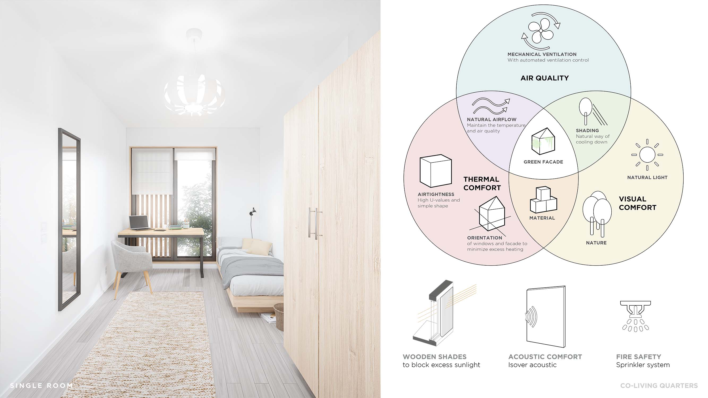
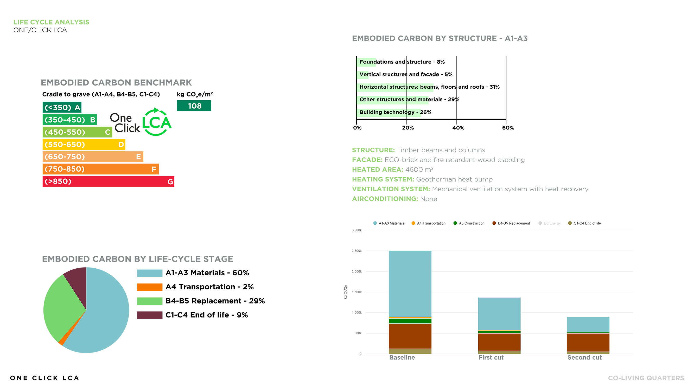

KI
URA

renders done by
Niko VanhalaThe project involves the renovation of an old factory building, which will be used to integrate the local community, as well as the construction of new residential buildings, some of which will be used as private dormitory/apartments for rent by students.
Contest required to use OneClick LCA application to calculate CO2 emission and other environmentally important values.
Our main goal with this concept was to create a lively housing block, that would seamlessly connect a more private student complex to the public renovated culture-building. We designed the student living quarters with user-comfort foremost in mind - The spaces hold multiple differing levels of privacy within them, offering varying environments for each one’s needs. Mutual daily activities are located in shared spaces to reinforce social aspects of living. These shared spaces are separated from the housing masses to offer a better acoustic atmosphere for each occupant.